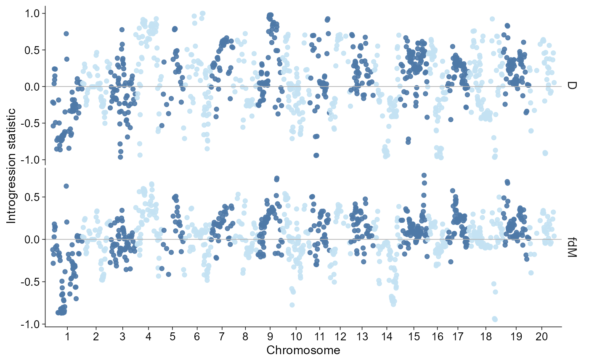
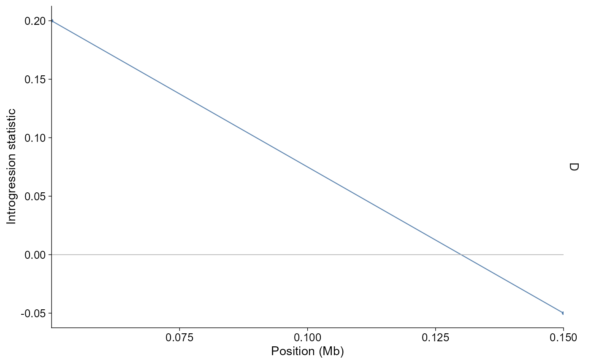
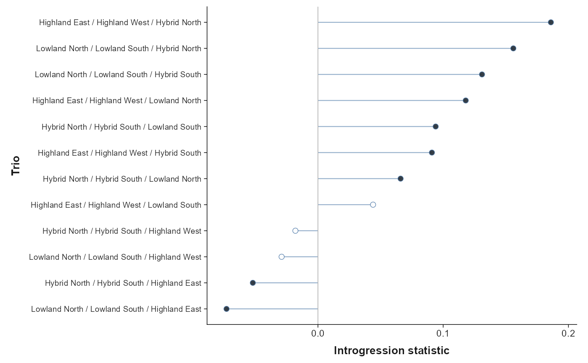
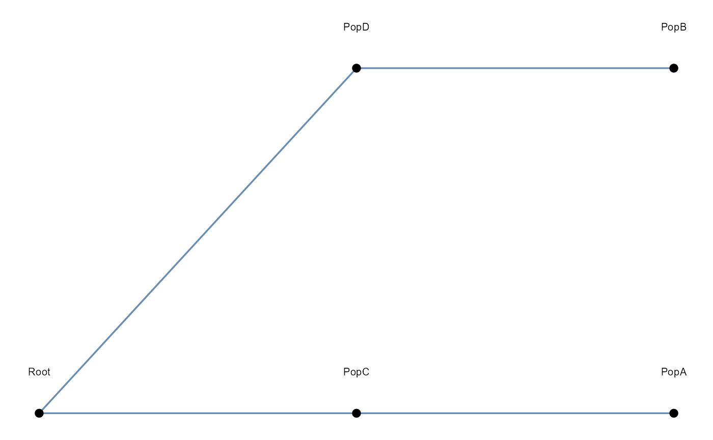
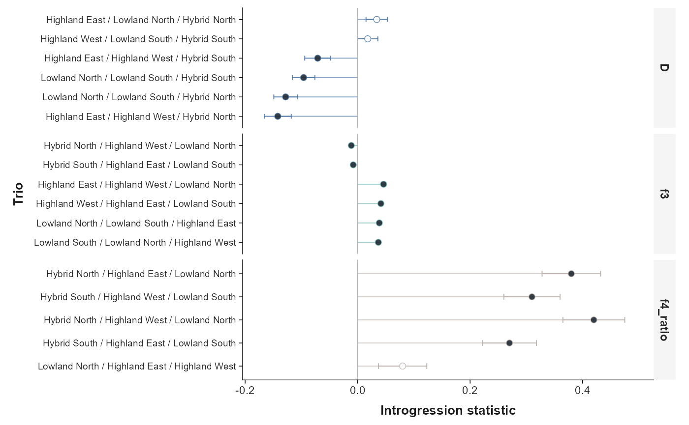

ggpop imports common introgression summaries into a
typed ggpop_introgression object. The module covers window
statistics from Dsuite and genomics_general, trio-level Dsuite
D-statistics, and edge tables from TreeMix-style migration summaries or
ADMIXTOOLS2 qpGraph outputs.
API summary
| Task | API | Notes |
|---|---|---|
| Import Dsuite Dtrios | import_introgression(file, type = "dsuite_dtrios") |
Trio-level D statistic summaries |
| Import Dsuite local windows | import_introgression(file, type = "dsuite_dinvestigate") |
D, fd, fdM, and df window statistics |
| Import genomics_general windows | import_introgression(file, type = "genomics_general") |
ABBA-BABA window outputs |
| Import graph edges |
import_introgression(file, type = "treemix") /
"qpgraph"
|
Reads user-facing from / to edge
tables |
| Direct plot | plot_introgression(data, stat = ...) |
Returns a ggplot object |
| Layered plot | ggpop(data) + geom_introgression(...) |
Tidy ggplot extension path |
Window introgression statistics
genomics_general ABBA-BABA windows are imported in long form, with one row per statistic per window. Genome-wide calls default to a chromosome-wise window point plot on a Manhattan-like genome axis, matching common ABBA-BABA/fdM window summaries where each point is one genomic window.
intro <- import_introgression(
ggpop_extdata("introgression", "vcf_pop_example", "ABBABABA_window.csv"),
type = "genomics_general"
)
class(intro)
#> [1] "ggpop_introgression" "data.frame"
unique(intro$stat)
#> [1] "D" "fd" "fdM"This bundled file is a compact genomics_general-style ABBA-BABA
window table derived from the package VCF and pop_group.txt
metadata. It is included so the examples share the same population
labels as the other modules; for real analyses, import the output
produced by genomics_general or Dsuite.
plot_introgression(intro, stat = c("D", "fdM"))
When a chromosome or region is supplied, the direct plot uses a local position axis in megabases.
plot_introgression(intro, stat = "D", chr = "1")
Dsuite Dinvestigate / localFstats files use the same
plotting path.
dsuite_windows <- import_introgression(
ggpop_extdata("introgression", "Dsuite", "Dinvestigate.tsv"),
type = "dsuite_dinvestigate"
)
unique(dsuite_windows$stat)
#> [1] "D" "fd" "fdM" "df"Trio D-statistics
Dsuite Dtrios summaries are imported as trio-level
statistics. The default plot orders trios by D statistic value and keeps
the direction visible.
dtrios <- import_introgression(
ggpop_extdata("introgression", "Dsuite", "Dtrios.tsv"),
type = "dsuite_dtrios"
)
plot_introgression(dtrios)
Graph edge tables
TreeMix and qpGraph workflows often need graph visualization after
model fitting. ggpop reads a compact edge table with
from and to columns, plus optional weights or
bounds. TreeMix internal *.edges.gz files are not treated
as a stable public schema; convert migration edges from the user-facing
treeout.gz summary or provide an explicit edge table. Full
TreeMix-style plot_tree() plus residual heatmap support
belongs to a dedicated TreeMix view.
treemix_edges <- import_introgression(
ggpop_extdata("introgression", "TreeMix", "migration_edges.tsv"),
type = "treemix"
)
plot_introgression(treemix_edges)
ADMIXTOOLS2 qpGraph edge data frames can be written as a table and imported the same way.
qpgraph_edges <- import_introgression(
ggpop_extdata("introgression", "ADMIXTOOLS2", "qpgraph_edges.tsv"),
type = "qpgraph"
)
head(qpgraph_edges)
#> analysis stat from to value weight lower upper
#> qpgraph_edges.tsv.1 graph edge Root PopC 1.00 1.00 0.0 1.0
#> qpgraph_edges.tsv.2 graph edge Root PopD 1.00 1.00 0.0 1.0
#> qpgraph_edges.tsv.3 graph edge PopC PopA 0.24 0.24 0.1 0.4
#> qpgraph_edges.tsv.4 graph edge PopD PopB 0.16 0.16 0.1 0.3
#> file source
#> qpgraph_edges.tsv.1 qpgraph_edges.tsv qpgraph
#> qpgraph_edges.tsv.2 qpgraph_edges.tsv qpgraph
#> qpgraph_edges.tsv.3 qpgraph_edges.tsv qpgraph
#> qpgraph_edges.tsv.4 qpgraph_edges.tsv qpgraph
#> .group
#> qpgraph_edges.tsv.1 graph:edge:qpgraph_edges.tsv
#> qpgraph_edges.tsv.2 graph:edge:qpgraph_edges.tsv
#> qpgraph_edges.tsv.3 graph:edge:qpgraph_edges.tsv
#> qpgraph_edges.tsv.4 graph:edge:qpgraph_edges.tsvLayered path
Use ggpop() plus geom_introgression() when
composing with additional ggplot layers.
intro |>
ggpop() +
geom_introgression(stat = "D")